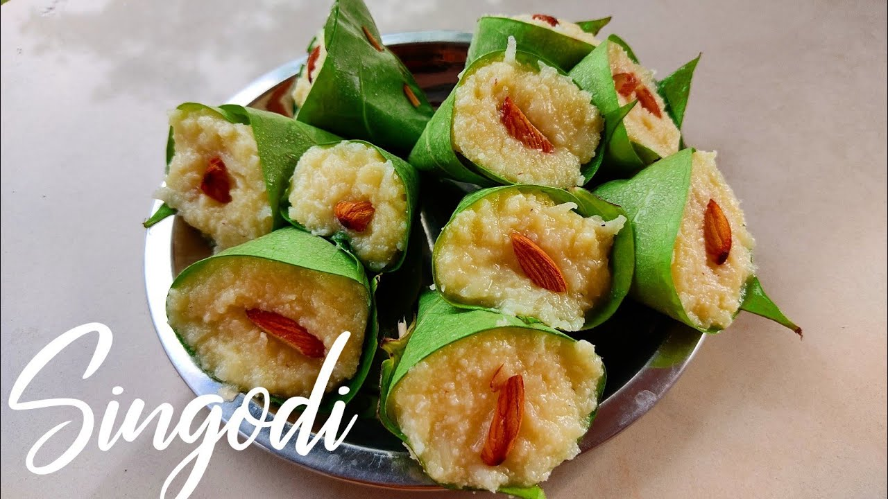

CHAMOLI
Let us know about Chamoli
Located in the Central Himalayan region and surrounded by pristine greens, undulating valleys, stunning vistas, breathtaking landforms and various varieties if flora - Chamoli is the birthplace of the Chipko Movement and attracts nature lovers as much as it beckons the religiously bent. History has it that Chamoli was carved out of the former Garhwal district in 1960. When in Chamoli, it is imperative to try local and traditional cuisine. Predominantly grain and cereal-based, the dishes are simple and nutritious, incorporate fresh local produce. Chamoli is a shopper’s delight and boasts shops that offer several local products like pickles and jams, decorative and utility objects, handloom products and warm clothes made of Angora wool, which is derived from the Angora rabbit that is found here.
Famous places to be visited :
- Tungnath Temple
- Hemkund Sahib
- Roopkund Lake
- Joshimath
- Gopeshwar Mahadev Temple
Famous food :
- Pinalu Gutuk
Pinalu Gutuk is a special dish made out of fried, rich potatoes and is a must-try
Pinalu Gutuk is a special dish made out of fried, rich potatoes and is a must-try
Famous local things :
- Khadi clothes
- Wooden toys and stamps
- Gharwal Wools
Dehradun
Let us know about Dehradun
Fascinating history and intriguing mythology meet at the crossroads of this beautiful hill-station, one of the most popular in the country. Just 240 km from Delhi, nestled in the rolling Doon Valley and at the foothills of the Himalayas, Dehradun is surrounded by high mountains and lush Sal forests. Known for its pleasant year-round weather and scenic surroundings, the city is a gateway to several popular hill-stations like Mussoorie and pilgrimage sites like Haridwar and Rishikesh.

Famous places to be visited :
- Robber’s Cave
- Sahastradhara
- Tapkeshwar Temple
- Malsi Deer Park
- Tapovan Temple
Famous food :
- Bun Tikka
- Bread Pakora
- Rava Dosa
Famous local things :
- Handmaid bags
- Woollen Traditional clothes
- Khadi clothes
HALDWANI
Let us know about Haldwani
Known as the Gateway to Kumaon, Haldwani in Uttarakhand is known for its scenic views and pleasant climate. Haldwani stands for the forests of Haldu trees as the region once had an abundance of Haldu trees (also known as Kadamb).
Famous places to be visited :
- Kathgodam
- Gaula Dam
- Shitla Devi Temple
- Jeolikot
- Naukuchiatal
- Hanuman Garhi Temple
Famous food :
- Bal Mithai
- Bhatt ka joula
- Lason ka lur
- Gaderi ki sabji
- Gathi
Famous local things :
- Pine wood crafts
- Woollen shawls and sweaters
- Homemade eatables
NANITAL
Let us know about NANITAL
The Lake City Nainital, situated in the lap of Uttarakhand is one of the famous places in the state of Uttarakhand. Listed below are some of the best things to do in Nainital.
Famous places to be visited :
- Naina Devi
- Pangot And Kilbury Bird Sanctuary
- Raj Bhawan
- Corbett National Park
- Cheena Peak
- Nainital Zoo
Famous food :
- Bun Tikki
Famous local things :
- Fancy Candles
Available in abundance and in unique designs, these gorgeous looking famous Nainital candles come in a gazillion shapes and scents
- Pine arts
- Homemade eatables and wollen shawls
Available in abundance and in unique designs, these gorgeous looking famous Nainital candles come in a gazillion shapes and scents
PANTNAGAR
Let us know about Pantnagar
Pantnagar is a famous industrial area and home to G.B. Pant University of Agriculture & Technology, one of the best agriculture campuses in India
Famous places to be visited :
- Kali Chaur
- Shani Mandir
- Shitla Devi
- Asht Bujha Lakshmi Temple
- Cheena Peak
- Garjia Devi Temple
Famous food :
- Dosa
- Bisi Bele Bath
- Jolada Roti
- Idli, Vada, Sambhar
Famous local things :
- Woolen Shawls And sweaters
- Homemade Eatables
- Jewellery And Accessories
RANIKHET
Let us know about Ranikhet
Apart from being a wonderful holiday destination, Ranikhet is also known to try on your adventure shoes – go for some trekking, mountain climbing, camping or rappelling. It is basically a cantonment town that houses the Kumaon Regiment and the Naga Regiment, which is maintained by the Indian Army

Famous places to be visited :
- Haidakhan Babaji Temple
- Naukuchia Taal
- Chaubatia
- Swargashram Binsar Mahadev Mandir
- Jhula Devi Templek
Famous food :
- Baal Mithai
'Baal Mithai' is one of the favorite sweet of Mahendra Singh Dhoni. You can also try another sweet
- Singaudi
'Singaudi' which is rich in sugar and ghee. This sweet is packaged in a leave. Another excellent shopping option is shawls at KRC Shawl and Tweed Factory and Outlet
'Baal Mithai' is one of the favorite sweet of Mahendra Singh Dhoni. You can also try another sweet
'Singaudi' which is rich in sugar and ghee. This sweet is packaged in a leave. Another excellent shopping option is shawls at KRC Shawl and Tweed Factory and Outlet
Famous local things :
- Woolen Shawls And sweaters
- Homemade Eatables
- Jewellery And Accessories
UTTARAKASHI
Let us know about Uttrakashi
Uttarkashi, meaning Kashi of the north, is a town located in Uttarkashi district in Uttarakhand, India. Uttarkashi town is headquarters of the district. Uttarkashi is also known as Somya Kashi. Uttarkashi is a religious place for spiritual and adventurous tourism. Uttarkashi town is also called as Shivnagri. The town has number of temples and ashrams. Uttarkashi is known for its religious people, weather, education
Famous places to be visited :
- Gangotri Glacier
- Dayara Bugyal
- Kedarkantha
- Vishwanath Temple
- Gangotri National Park
Famous food :
- Kafuli
- Bhang Ki Chutney
- Phaanu
- Baadi
- Aaloo Tamatar Ka Jhol
Famous local things :
- woollen clothes
- prayer articles and religious souvenirs/li>
- wood handicrafts and showpieces
RISHIKESH
Let us know about Rishikesh
Known as world capital of yoga and meditation.Holy town with pleasant weather throughout the year.Most loved place for all Beatles' fan across the world.Unmatched white water rafting and other adventure sports.Gateway to the Garhwal Himalayas.